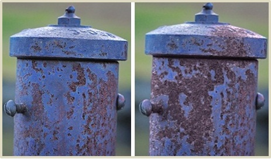

Weathering effects with geometric details for images
アピアランスマップを用いた景観画像のための対話的な経年変化編集システム
Computer Graphics International 2011
Yuki Endo, Yoshihiro Kanamori, Jun Mitani, Yukio Fukui
University of Tsukuba
Abstract
We present an image-editing technique that can synthesize weathering effects with fine-scale geometric variations that occur together with weathering phenomena. We extract such fine-scale geometries as high-frequency components of the image semi-automatically according to the estimated weathering distribution in the image. The geometric details are modified when (de)-weathering is applied, yielding much morerealistic appearance than previous methods without adding excessive user inputs. We demonstrate the effectiveness of the present technique through comparisons with previous methods.
画像における物体の経年変化を再現する手法を提案する．従来の手法では画像中の物体の色分布から構築される時系列モデルを用いて，物体の表面色を変化させることで写実的な経年変化を再現していた．しかしながら，錆や苔，塗料のはげ落ちなどの経年変化によって生じる，物体表面の凹凸の変化を再現することは難しかった．そこで本研究では，その経年変化によって生じる凹凸を再現するために，画像の高周波成分を用いるアプローチをとる．入力画像から高周波・低周波分離手法を用いて高周波成分を抽出してから，その高周波成分をテクスチャ合成手法を用いて合成し，経年変化の進行度合いに合わせてマッピングすることで，最終的な結果画像を得る．既存手法との結果の比較により，物体表面の凹凸を伴う写実的な経年変化を再現できることを確認した．
Video
Publication
- Yuki Endo, Yoshihiro Kanamori, Jun Mitani, Yukio Fukui: "Weathering effects with geometric details for images", In Proc. of Computer Graphics International 2011, 2011-6 (short paper)
- 遠藤 結城，金森 由博，三谷 純，福井 幸男: "アピアランスマップを用いた景観画像のための対話的な経年変化編集システム", 第139回グラフィクスとCAD研究会, 2010-7 (優秀研究発表賞受賞).
Supplemental material:
- Windows demo [zip]